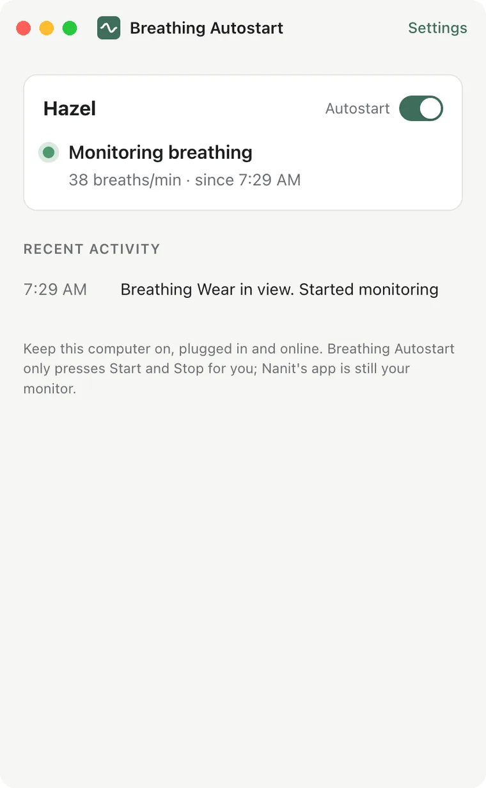
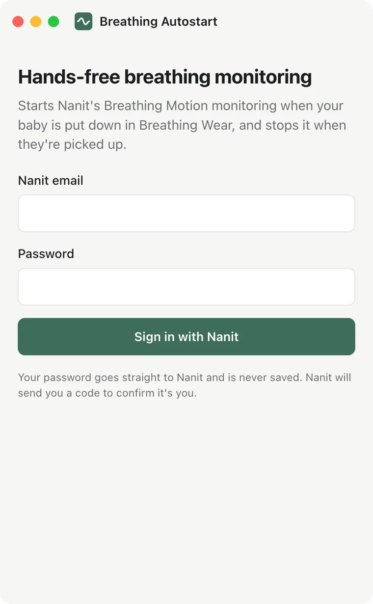
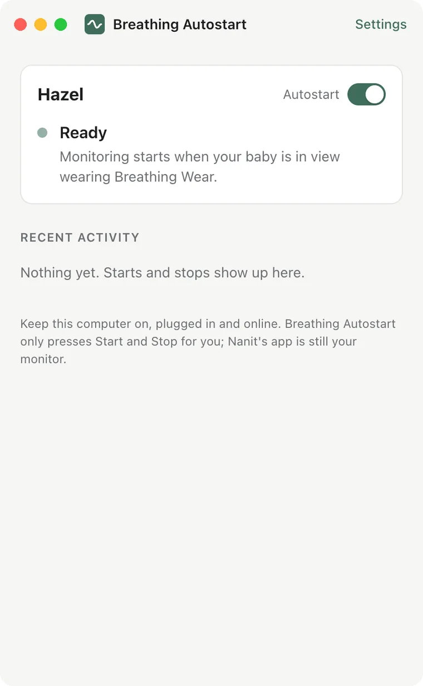
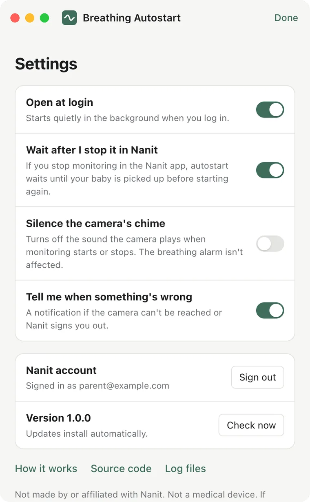

A free app for your Mac or PC. It starts Nanit's Breathing Motion monitoring when your baby is put down in Breathing Wear, and stops it when they're picked up.
Breathing Autostart runs on a Mac or Windows computer. Open this page there to download it.
Free and open source. macOS 11+ or Windows 10/11. Not affiliated with Nanit.

When the camera sees someone put your baby down, the app asks Nanit's own Breathing Wear finder to look. If it finds the band, monitoring starts right where your baby is, usually within a minute.
When your baby is lifted out, or the band is out of view for 8 minutes, it stops the session for you. No full-screen "Monitoring stopped" or "Stop monitoring?" dialogs on every phone.
It sits in the menu bar or system tray, opens at login and keeps the computer awake. Brief lifts and a blanket over the band don't end anything, and if you stop monitoring yourself, it waits.



No. Nanit does all the monitoring and sends all the alerts, exactly as before. This app only presses Start and Stop in Nanit's Breathing Motion monitoring for you. Keep the Nanit app on your phone.
No, and neither is Nanit's breathing monitoring. Follow safe sleep guidance. If the app can't reach your camera you'll get a notification, and you can start monitoring in the Nanit app as usual.
A Nanit camera with Breathing Motion monitoring, Breathing Wear (band, swaddle or sleep bag), and a Mac (macOS 11 or later, Apple silicon or Intel) or Windows 10/11 PC that stays on.
Yes. The app keeps the computer from sleeping while it's working (the screen can still turn off). A laptop should stay plugged in with the lid open. If the computer sleeps or goes offline, autostart pauses until it's back.
Nanit notes who pressed Stop. When the app stops a session, it does so with your account, so Nanit shows your name. That short note replaces Nanit's full-screen dialogs.
Autostart waits until your baby is picked up and put back down before starting again. You can turn that off in Settings if you'd rather it start again right away.
Your password goes only to Nanit and is never saved. The app keeps Nanit's sign-in tokens encrypted by your computer's keychain or Windows Data Protection. It talks only to Nanit and to GitHub (for updates). There's no server of ours and no analytics. Video frames go only to Nanit's own Breathing Wear finder.
If SmartScreen says "Windows protected your PC", click More info, then Run anyway. You only do this once. The Mac app is signed and notarised by Apple, so it opens without a warning.
Yes. Each baby with a camera gets its own card and its own Autostart switch. Run the app on one computer only, so two copies don't both start and stop monitoring.
While your baby is out of bed it reads the camera's video, about as much as having Nanit's live view open. While monitoring runs normally it stops reading the video.
Yes, MIT licensed, on GitHub. Every build is tested against a stand-in for Nanit's service and installed on Mac and Windows before release.
Not made by or affiliated with Nanit. Nanit and Breathing Wear are trademarks of Nanit, used here only to say what this app works with. Breathing Autostart is not a medical device and doesn't monitor your baby. Nanit could change its service at any time, which may stop autostart from working.